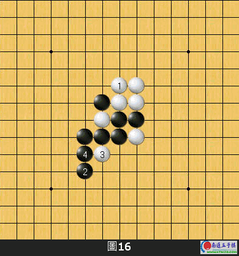

从五子棋外行进阶到入门的关键→学会★反杀★的技巧
#1 从五子棋外行进阶到入门的关键→学会★反杀★的技巧 作者：有志青年 发表时间：2007-3-29 12:54:32
图1︰黑先，如何下才能确实掌握序盘的主动权？
图2︰上图黑1单挡白子活二的下法太过平凡与懦弱，被白2一挡后黑胜困难。
此刻正是利用反杀技巧的一个好时机。
图3︰黑1构阵好棋！不只一手同时形成两个活二，而且也间接的防住了白方唯一的一个活二。
白A则黑B；白B则黑A，白方唯一的一条活二无法动弹。
图4︰黑先，如何最大幅度的掌握先手优势？
图5︰黑1先跳活三同时阻白活二后，於3位构成两个活二。
我想，大多数初中阶棋友都会选择这一下法的吧！
图5黑的下法确实是不错，但被白4防守之后黑虽然仍有优势但要取胜还有相当的难度。
如果我们已经掌握了图3的反杀技巧的话，不妨可以想想黑是否可以在图4的局面利用反杀的技巧。
图6︰黑1為利用了反杀技巧的一著好棋。这步棋一方面加强了右边黑型；另一方面也隐约牵制住了白方唯一的一条活二。
白A则黑B；白B则黑A，原理跟图3是一样的。
图7︰黑先，黑方型态看上去连一个活二也没有。此时黑方应该选择是攻还是守比较好呢？
图8︰黑1的防守太过软弱。被白2防守后黑无法有效确实的掌握先手优势。
图9︰图8的局面，黑棋仍然能利用反杀的技巧来一举确立优势的！
上图黑1好棋！一手棋就让左边的黑型一下子强了起来，同时也间接让白方右边的跳二失去了作用。
白A则黑B；白B则黑A，白方无法有效的抢回局面主动权。
图10︰黑先，在此局面下是否可以利用到反杀的技巧呢？
图11︰黑1或其他防守点在此局面下都太过保守而不足取。
图12︰黑1构阵好棋！白A则黑B；白B则黑C；白D则黑E，无论白接下来怎麼下都会被黑方给反击到。
最后，举一个较难的例子给各位参考。
图13︰白先，从盘面上来看，白右方只剩下一条目前没有任何威胁的死三，而黑左方有一个死三，下方有一条活二。
单从攻击线来看的话，白方是相当不利的。但如果能够懂得利用反杀技巧的话却可以一举逆转当前局势！
图14︰白1单挡黑下方的活二同时加强右边白阵是失败的！黑2以下可以轻鬆在左边取胜。
图15︰白1单挡黑棋死三则太过软弱，黑2整备后白方局势将大為不利。

图16︰白1构阵当然也不成立，黑2以下可以简单取胜。
图17︰这个白1可以说是将反杀技巧发挥到淋漓尽致的一步好棋！
以下，就让我们来看看这个白1的威力究竟有多威猛。
图18︰黑1以下意图直接在左边发展攻势，但被白4跳三反击之后黑攻势无法延续。
图19︰图18的黑3改為本图黑3往上跳活三的变化。白4先衝四后再白6防，留下了A位的死四活三点，黑方的攻势同样无法延续。
图20︰黑1或A位往下活三的话则白2上防后，留有B→C的手段结果反而变成了白攻黑的局势。
反杀是五子棋基础技巧中相当重要的一个环节，希望各位读者在看完这篇文章后，如果能够确实的将反杀技巧应用在实战中的话，则是我的荣幸。
［ 五子天涯 于 2009-5-4 14:09:07 时花20金币送鲜花一朵］
#2 Re:从五子棋外行进阶到入门的关键→学会★反杀★的技巧 作者：颜炳杰 发表时间：2007-3-31 17:48:20
不对吧,图14中白也不错吧#3 Re:从五子棋外行进阶到入门的关键→学会★反杀★的技巧 作者：希望成为高手 发表时间：2007-4-5 0:10:38
呃 能看懂 但是实战估计有点困难#4 Re:从五子棋外行进阶到入门的关键→学会★反杀★的技巧 作者：gerbo 发表时间：2007-5-6 20:31:57
 图１７好强哈，没想到～～！！
图１７好强哈，没想到～～！！
#5 Re:从五子棋外行进阶到入门的关键→学会★反杀★的技巧 作者：小小学棋之 发表时间：2007-5-20 0:40:50
不错的贴
#6 Re:从五子棋外行进阶到入门的关键→学会★反杀★的技巧 作者：5子~学遥 发表时间：2007-8-29 17:13:01
恩!好聪明的一种守法啊!
#7 Re:从五子棋外行进阶到入门的关键→学会★反杀★的技巧 作者：【弈缘】狂人 发表时间：2007-8-29 18:15:41
谢谢楼主 学习了#8 Re:从五子棋外行进阶到入门的关键→学会★反杀★的技巧 作者：caike 发表时间：2007-9-20 8:55:11
有帮助！关键是实战中的运用啦！！#9 Re:从五子棋外行进阶到入门的关键→学会★反杀★的技巧 作者：sjdang 发表时间：2007-9-21 10:15:51
不错，总结经验还是有帮助的！！
#10 Re:从五子棋外行进阶到入门的关键→学会★反杀★的技巧 作者：君子好球 发表时间：2007-9-22 15:45:59
茅塞顿开．谢谢作者！#11 Re:从五子棋外行进阶到入门的关键→学会★反杀★的技巧 作者：笑谈 发表时间：2007-9-28 10:07:53
好帖.对于我这样的新手来说.通俗易懂.好啊.希望以后多来些.谢谢#12 Re:从五子棋外行进阶到入门的关键→学会★反杀★的技巧 作者：紫菱洲歌 发表时间：2007-9-29 13:41:26
对棋时，就怕乱了方寸了。#13 Re:从五子棋外行进阶到入门的关键→学会★反杀★的技巧 作者：ezhugm 发表时间：2007-10-5 22:31:42
一步想三步，就是象那些围棋九段一样，一步下结束可以想到后面的100多步。或者说一步走完要等到几步后才显示出威力
感觉是很可怕到不可能，但那是真的，比如石佛李昌镐，曾经在布局阶段想到中盘140余手，而且还考虑了其中的几个变化。
#14 Re:从五子棋外行进阶到入门的关键→学会★反杀★的技巧 作者：xyz007 发表时间：2007-10-24 16:31:11
豁然开朗!!!服了!#15 Re:从五子棋外行进阶到入门的关键→学会★反杀★的技巧 作者：xr__ 发表时间：2007-10-24 23:22:15
这么好的贴 不顶不行啊！！#16 Re:从五子棋外行进阶到入门的关键→学会★反杀★的技巧 作者：零点 发表时间：2007-11-11 15:47:19
由浅入深，讲的真好，能看明白，谢谢楼主#17 Re:从五子棋外行进阶到入门的关键→学会★反杀★的技巧 作者：luoye 发表时间：2007-11-12 9:52:10
不错不错 赞啊赞
#18 Re:从五子棋外行进阶到入门的关键→学会★反杀★的技巧 作者：随便 发表时间：2007-11-14 14:56:49
妙啊,受用了.图14的防是没用的.楼主教的是思路,大有俾益,谢谢了
#19 Re:从五子棋外行进阶到入门的关键→学会★反杀★的技巧 作者：乱世同盟 发表时间：2008-3-21 17:12:43
受教了#20 Re:从五子棋外行进阶到入门的关键→学会★反杀★的技巧 作者：wisor 发表时间：2008-3-26 18:59:33
服了
好好学习
#21 Re:从五子棋外行进阶到入门的关键→学会★反杀★的技巧 作者：五子天下 发表时间：2008-3-29 9:11:46
慢慢来#22 Re:从五子棋外行进阶到入门的关键→学会★反杀★的技巧 作者：五子天下 发表时间：2008-3-30 11:45:22
17在花月定式里有 浙江五子棋讲3#23 Re:从五子棋外行进阶到入门的关键→学会★反杀★的技巧 作者：汪洋孤舟 发表时间：2008-4-24 0:31:37
图17有点不可思议！收获不少！要多加练习啊！#24 Re:从五子棋外行进阶到入门的关键→学会★反杀★的技巧 作者：爱在春夏秋冬 发表时间：2008-4-24 2:39:43
晕,看不懂了!
我这里看不到后面的谱!
#25 Re:从五子棋外行进阶到入门的关键→学会★反杀★的技巧 作者：菜巫妖 发表时间：2008-4-24 11:57:38
能不能再讲讲最后一个例子，如果白取得了进攻机会，怎么胜黑棋？#26 Re:从五子棋外行进阶到入门的关键→学会★反杀★的技巧 作者：敢脱天下先 发表时间：2008-4-25 9:11:53
我忽然有一种这样的体会：有些着法，绝妙在于——笨拙如斯！
大巧若拙！！！
#27 Re:从五子棋外行进阶到入门的关键→学会★反杀★的技巧 作者：汪洋孤舟 发表时间：2008-4-30 13:35:50
虽然看了很多遍了，但还是感觉没完全记住！还要再看看！#28 Re:从五子棋外行进阶到入门的关键→学会★反杀★的技巧 作者：皮洛曹 发表时间：2008-5-4 17:16:40
来学了一招.#29 Re:从五子棋外行进阶到入门的关键→学会★反杀★的技巧 作者：连连连堵堵堵 发表时间：2008-5-7 9:46:55
受益匪浅, 谢啦
谢啦
#30 Re:从五子棋外行进阶到入门的关键→学会★反杀★的技巧 作者：旅行者 发表时间：2008-5-12 20:48:27
谢谢了，学习
#31 Re:从五子棋外行进阶到入门的关键→学会★反杀★的技巧 作者：秘密 发表时间：2008-5-16 22:55:07
 再看一次
再看一次
#32 Re:从五子棋外行进阶到入门的关键→学会★反杀★的技巧 作者：风了了 发表时间：2008-5-21 18:50:54
我感觉14中一定死的 是吧#33 Re:从五子棋外行进阶到入门的关键→学会★反杀★的技巧 作者：嚣嚣 发表时间：2008-5-28 7:37:18
学习了，得多看几遍。
#34 Re:从五子棋外行进阶到入门的关键→学会★反杀★的技巧 作者：摩诺 发表时间：2008-5-30 16:57:07
非常好，希望多些这样的教学#35 Re:从五子棋外行进阶到入门的关键→学会★反杀★的技巧 作者：来客沙丝 发表时间：2009-3-9 18:37:40
同意楼上的，这种有浅入深的讲解太好了。最适合新手。

#36 Re:从五子棋外行进阶到入门的关键→学会★反杀★的技巧 作者：超级菜鸟徒弟 发表时间：2009-3-10 14:02:30
讲的太好了,思路开阔了不少,谢谢!
#37 Re:从五子棋外行进阶到入门的关键→学会★反杀★的技巧 作者：叶灏 发表时间：2009-3-11 2:02:54
最后一题太棒了,前面四道我一眼能看出.最后那一道我答了,往下拉一看答案,我答错了,这一手确实太精彩!
多谢楼主,这道题我让受益颇多.
#38 Re:Re:从五子棋外行进阶到入门的关键→学会★反杀★的技巧 作者：五子天涯 发表时间：2009-5-4 14:04:41
引用：与楼上同感，好帖！精彩！
原文由 叶灏 发表于 2009-3-11 2:02:54 :最后一题太棒了,前面四道我一眼能看出.最后那一道我答了,往下拉一看答案,我答错了,这一手确实太精彩!
多谢楼主,这道题我让受益颇多.
#39 Re:从五子棋外行进阶到入门的关键→学会★反杀★的技巧 作者：墨客来了 发表时间：2009-6-7 14:04:03
17真是 太好 了 ，谢谢#40 Re:从五子棋外行进阶到入门的关键→学会★反杀★的技巧 作者：解放者 发表时间：2009-6-8 17:40:11
看来我的水平差不多就是刚刚入门。
17原本我也应该算得出，可惜犯了低级错误，忽略了黑冲4后的连杀。
#41 Re:从五子棋外行进阶到入门的关键→学会★反杀★的技巧 作者：爽灵 发表时间：2009-6-12 10:39:13
楼主 谢了
#42 Re:从五子棋外行进阶到入门的关键→学会★反杀★的技巧 作者：舍露里 发表时间：2009-6-13 20:30:02
非常感谢作者！#43 Re:从五子棋外行进阶到入门的关键→学会★反杀★的技巧 作者：三一生 发表时间：2009-6-17 16:44:46
唉，初来；我还以为是系统讲解呢！得慢慢体会。#44 Re:从五子棋外行进阶到入门的关键→学会★反杀★的技巧 作者：注册初学者 发表时间：2009-6-24 13:51:42
茅塞顿开．关键是实战中的运用#45 Re:从五子棋外行进阶到入门的关键→学会★反杀★的技巧 作者：游吟乐者 发表时间：2009-6-25 1:35:34
我能回帖了不？
#46 Re:从五子棋外行进阶到入门的关键→学会★反杀★的技巧 作者：色狼 发表时间：2009-7-3 19:26:42
太牛B了，但实战有点困难#47 Re:从五子棋外行进阶到入门的关键→学会★反杀★的技巧 作者：尧军 发表时间：2009-8-25 14:01:55
对我有启发#48 Re:从五子棋外行进阶到入门的关键→学会★反杀★的技巧 作者：书云 发表时间：2009-9-25 12:19:01
看着爽，做起来，呃。。。#49 Re:从五子棋外行进阶到入门的关键→学会★反杀★的技巧 作者：龙之紫辰 发表时间：2009-9-26 4:19:48
谢谢 学习了！
#50 Re:从五子棋外行进阶到入门的关键→学会★反杀★的技巧 作者：小怪 发表时间：2009-9-28 20:14:01
受益了`不过还有么？我是初学的`感觉还是老被反反杀`。#51 Re:从五子棋外行进阶到入门的关键→学会★反杀★的技巧 作者：倾恋 发表时间：2009-10-17 11:21:01
强悍，对我这新手来说有点难度
#52 Re:从五子棋外行进阶到入门的关键→学会★反杀★的技巧 作者：超级找只羊 发表时间：2009-10-17 23:06:49
#53 Re:从五子棋外行进阶到入门的关键→学会★反杀★的技巧 作者：五子五子棋 发表时间：2009-10-25 20:52:46
受益匪浅谢谢#54 Re:从五子棋外行进阶到入门的关键→学会★反杀★的技巧 作者：法源海 发表时间：2009-10-26 20:42:51
受教,初悟,裨益#55 Re:从五子棋外行进阶到入门的关键→学会★反杀★的技巧 作者：何帅 发表时间：2009-11-2 23:29:59
恩，不错的~~#56 Re:从五子棋外行进阶到入门的关键→学会★反杀★的技巧 作者：大雪无痕 发表时间：2009-11-3 8:30:56
写得很好
#57 Re:从五子棋外行进阶到入门的关键→学会★反杀★的技巧 作者：小頑童 发表时间：2009-11-6 23:12:29
學到東西了呢!感謝萬分#58 Re:从五子棋外行进阶到入门的关键→学会★反杀★的技巧 作者：神秘幽灵 发表时间：2009-11-21 0:29:15
能看懂，就是实战中有点算不过来！
#59 Re:从五子棋外行进阶到入门的关键→学会★反杀★的技巧 作者：橄榄树 发表时间：2009-11-28 0:38:19
太好了
#60 Re:从五子棋外行进阶到入门的关键→学会★反杀★的技巧 作者：弈路欢歌 发表时间：2009-12-1 12:37:39
学习,谢谢您!#61 Re:从五子棋外行进阶到入门的关键→学会★反杀★的技巧 作者：博士 发表时间：2009-12-20 18:39:44
不错，实战练习一下希望有好的效果！#62 Re:Re:从五子棋外行进阶到入门的关键→学会★反杀★的技巧 作者：钱振鹏 发表时间：2010-1-1 16:39:13
引用：我没哪局不乱的
原文由 紫菱洲歌 发表于 2007-9-29 13:41:26 :
对棋时，就怕乱了方寸了。
#63 Re:从五子棋外行进阶到入门的关键→学会★反杀★的技巧 作者：绯色伊依 发表时间：2010-1-5 16:47:55
能看懂，不过实战就乱了，根本想不到那么多#64 Re:从五子棋外行进阶到入门的关键→学会★反杀★的技巧 作者：弈路欢歌 发表时间：2010-1-6 10:40:34
受益非浅,谢谢您,老师!#65 Re:从五子棋外行进阶到入门的关键→学会★反杀★的技巧 作者：牛生蛋 发表时间：2010-3-22 18:52:30
要是在实战中真能如此，则离高手不远矣#66 Re:从五子棋外行进阶到入门的关键→学会★反杀★的技巧 作者：岑小鱼 发表时间：2010-3-26 11:01:21
=======上图对应的爱五子棋谱代码如下，以便你拆解：========
h8i9g7h9g9i7i10g8f10i8g10h10f12
======================================================
=======上图对应的爱五子棋谱代码如下，以便你拆解：========
h8i9g7h9g9i7i10g8f10i8f8
======================================================
=======上图对应的爱五子棋谱代码如下，以便你拆解：========
h8i9g7h9g9i7i10g8f10i8f9
======================================================
#67 Re:从五子棋外行进阶到入门的关键→学会★反杀★的技巧 作者：马基利尼 发表时间：2010-3-26 13:45:01
我终于知道为什么平时老是被人狂攻，直到输为止。
#68 Re:从五子棋外行进阶到入门的关键→学会★反杀★的技巧 作者：唐照俊 发表时间：2010-4-8 23:45:23
嗯~~相当不错哈~~正适合我们这些初学者
#69 Re:从五子棋外行进阶到入门的关键→学会★反杀★的技巧 作者：天行弈者 发表时间：2010-4-13 13:57:35
图17的那种反招，需要精准的计算力和勇气才敢走的。学习了
#70 Re:从五子棋外行进阶到入门的关键→学会★反杀★的技巧 作者：只是一条鱼 发表时间：2010-11-14 14:21:28
多发点就更好！#71 Re:从五子棋外行进阶到入门的关键→学会★反杀★的技巧 作者：五子米猫 发表时间：2010-11-14 19:35:22
图17经典啊！#72 Re:从五子棋外行进阶到入门的关键→学会★反杀★的技巧 作者：霸王龙 发表时间：2010-11-29 12:17:01
图20黑棋下的不错#73 Re:从五子棋外行进阶到入门的关键→学会★反杀★的技巧 作者：醉卧春秋 发表时间：2011-3-8 15:48:56
图17实在是强 对方根本就没防守机会#74 Re:从五子棋外行进阶到入门的关键→学会★反杀★的技巧 作者：与郎共五 发表时间：2011-3-9 11:40:32
死三是指不能冲四的三.主帖中讲的死三应为眠三#75 Re:从五子棋外行进阶到入门的关键→学会★反杀★的技巧 作者：雨过云舒 发表时间：2011-3-9 13:25:01
学会反杀不应该是只知道有这种形，更要知道后面的杀法……感觉最后讲的就是花月的老定式
=======上图对应的爱五子棋谱代码如下，以便你拆解：========
h8h9i9j10g7i8j7k10h7i7g5
======================================================
#76 Re:Re:从五子棋外行进阶到入门的关键→学会★反杀★的技巧 作者：有机硅硅 发表时间：2011-3-12 18:13:51
验证过了图14白必败。嘿嘿
#77 Re:从五子棋外行进阶到入门的关键→学会★反杀★的技巧 作者：新手李棋 发表时间：2011-12-12 9:54:57
好文，新手由只防-》反防不容易，受教了。#78 Re:从五子棋外行进阶到入门的关键→学会★反杀★的技巧 作者：夏至 发表时间：2012-1-15 17:55:32
不错的东东，支持下。最后白棋的反击虽然平常，但还是好棋。#79 Re:从五子棋外行进阶到入门的关键→学会★反杀★的技巧 作者：蔡伟庆 发表时间：2012-1-21 14:11:19
头一次学习反杀呢。。。这几道题没看答案也都做出来了。不知道实战的时候能否自由运用。第一天来学习呢、想想以后自己的实力都有点兴奋呢。。。#80 Re:从五子棋外行进阶到入门的关键→学会★反杀★的技巧 作者：连珠谱 发表时间：2012-4-29 20:21:51
解题思路很重要
#81 Re:从五子棋外行进阶到入门的关键→学会★反杀★的技巧 作者：小道士 发表时间：2013-11-5 10:41:31
好贴，平时下棋都没注意，其实好好看还是能看出来的，不过最后一题太有难度了#82 Re:从五子棋外行进阶到入门的关键→学会★反杀★的技巧 作者：运河上的院子 发表时间：2014-6-25 15:01:21
学习了，确实收获不少#83 Re:从五子棋外行进阶到入门的关键→学会★反杀★的技巧 作者：饭饭 发表时间：2014-9-21 8:58:51
学习一下#84 Re:从五子棋外行进阶到入门的关键→学会★反杀★的技巧 作者：青丝成雪 发表时间：2014-10-4 10:25:50
学习了，谢谢！#85 Re:从五子棋外行进阶到入门的关键→学会★反杀★的技巧 作者：饭饭 发表时间：2014-10-26 13:07:40
学习了。。。。#86 Re:从五子棋外行进阶到入门的关键→学会★反杀★的技巧 作者：雪人兒 发表时间：2014-10-30 21:57:46
這對初階以上的我來說非常實用，謝謝分享#87 Re:从五子棋外行进阶到入门的关键→学会★反杀★的技巧 作者：小豹 发表时间：2014-11-12 18:57:49
好文